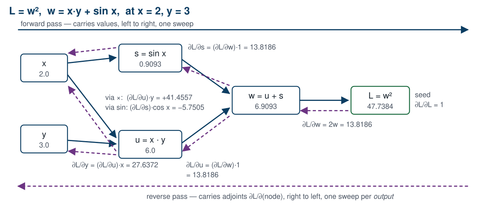
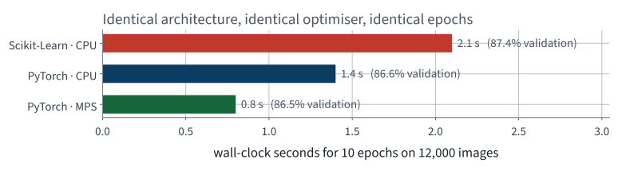
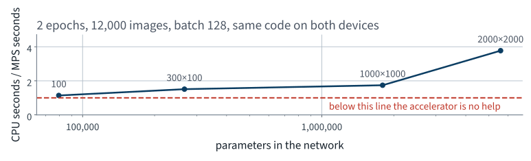
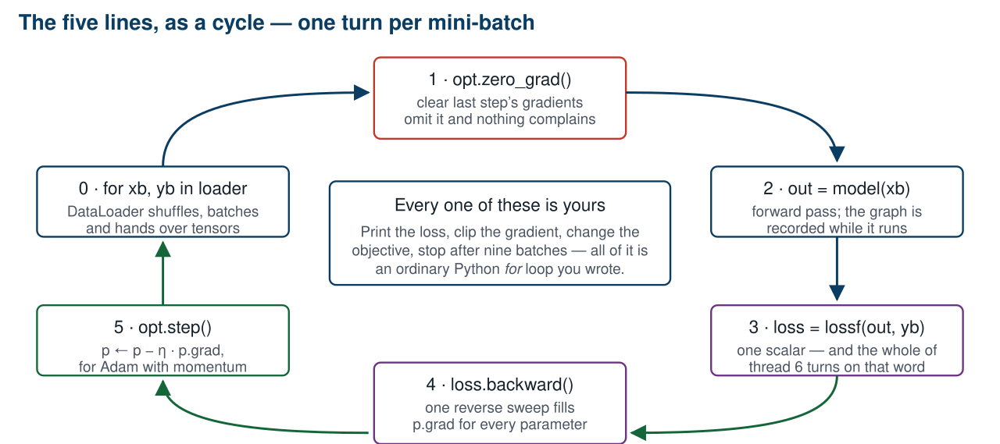
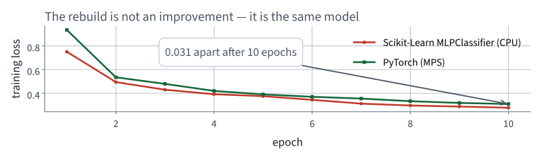
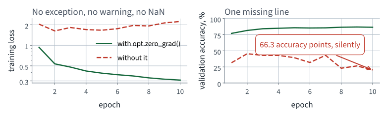

Fashion-MNIST
Lecture 10 Géron Ch. 10
Applications of Machine Learning
BSc Mathematics of Artificial Intelligence · Third year
Lecture 9 fitted a network with
MLPClassifier and found four things it will not let you do:
| you want to | you cannot |
|---|---|
| change what it optimises | there is no argument for it |
| see a gradient | nothing is exposed |
| stop mid-epoch, or log per batch | the smallest unit is one pass |
| move the computation to another device | there is no device to move to |
fit() contains a loop over epochs and batches that you did not
write, cannot see and cannot enter. The repair is not a better library. It
is owning the loop.
Today: what that loop has to compute, why it can be computed at all, and how to write it.
You called clf.fit().
It computed 266,610 partial derivatives, on every batch, 20 times over. How?
Measured on one run of this lecture’s notebook; hardware, library versions and random seeds can make a re-run differ slightly.
A network is a composition. Write the loss as
where $J_i$ is the Jacobian of $f_i$ evaluated at the point the forward pass reached. Every layer contributes one factor.
Matrix multiplication is associative.
So the product can be bracketed from either end. $(J_3 J_2)\,J_1$ starts at the output — reverse mode. $J_3\,(J_2 J_1)$ starts at the parameters — forward mode. Same number; very different cost.
Pick a direction in output space — for a scalar loss there is only one, and it is 1. Carry $\bar{u} = \partial L / \partial u$ backwards:
Forward mode, bracketed from the other end, gets one input direction per sweep, so a gradient over $n$ parameters costs $n$ sweeps. Reverse mode costs one sweep per output — and a loss has exactly one.

One sweep forward fills in the values, one sweep back every derivative — and $x$, used twice, sums its two edges.
AnimationThe 1986 paper’s contribution was noticing that this was cheap enough to be practical, not inventing the chain rule.
MLPClassifier, refitted on this lecture’s
12,000 images: 87.38% validation accuracy against a 10.0% baseline is a real
result.
Nothing here was measured dishonestly. The split was clean, the validation set was separate, the test set was touched once.
The bug is that you cannot do anything else.
Measured on one run of this lecture’s notebook; hardware, library versions and random seeds can make a re-run differ slightly.

Only the clock moved. Bars one and two share a CPU, so their ratio is the framework; bars two and three share the code, so theirs is the device — each under a factor of two.

At the smallest width the two devices nearly tie. From there the ratio climbs, because each batch carries more arithmetic to cover the cost of dispatching it.
fit() contains a loop over epochs and batches that you did not
write, cannot see, and cannot enter.
Every wall is the same wall. The repair is therefore not a better library — it is owning the loop.
Note what is not wrong: the maths, the metric, the split, the architecture. All of that carries over unchanged.
An array that also knows two things a NumPy array does not.
import torch
a = torch.tensor([[1., 2.], [3., 4.]])
print(a.device) # cpu
b = a.to("cuda") # or "mps"
print(a.requires_grad) # False — nothing is recorded yet
print(a.numpy()) # shares memory with a, on CPU
requires_grad, two slides on
if torch.cuda.is_available():
device = "cuda" # NVIDIA, and Colab
elif torch.backends.mps.is_available():
device = "mps" # Apple Silicon
else:
device = "cpu" # correct, and slow
requires_grad builds a graphIt does not compute a derivative. It says record what happens to me.
if inside forward just worksThat is the forward sweep from this lecture’s mathematics block, with the graph written down as it goes so the reverse sweep has something to walk.
>>> u = torch.tensor(2.0, requires_grad=True)
>>> v = torch.tensor(3.0, requires_grad=True)
>>> q = u * v + torch.sin(u)
>>> r = q ** 2
>>> r.grad_fn
<PowBackward0 object at 0x1291a4b50>
>>> r.grad_fn.next_functions
((<AddBackward0 object at 0x1291a4be0>, 0),)
Those are the nodes in the diagram, by name. Walking
next_functions to the leaves is the reverse sweep.
with torch.no_grad():
preds = model(X_val) # no graph is built
Forgetting no_grad is slow and
memory-hungry, but it is not a correctness bug. The two bugs that
follow are.
model = build_model().to(device)
opt = torch.optim.Adam(model.parameters(), lr=1e-3)
lossf = nn.CrossEntropyLoss()
for epoch in range(EPOCHS):
model.train()
for xb, yb in train_loader:
opt.zero_grad() # 1
out = model(xb) # 2
loss = lossf(out, yb) # 3
loss.backward() # 4
opt.step() # 5
Five lines. There is no hidden machinery: this is the whole
of what fit() was doing.

Every arrow is a line you wrote, so every arrow is a place you can print, clip, log, branch or stop.
| Line | What it does |
|---|---|
model.train() | puts dropout and batch-norm layers into training behaviour |
opt.zero_grad() | clears p.grad, which backward() adds to |
model(xb) | the forward sweep; the graph is recorded as it runs |
lossf(out, yb) | reduces the batch to one scalar — the whole point of the reverse sweep |
loss.backward() | the reverse sweep; fills p.grad for every parameter |
opt.step() | updates the parameters from p.grad |
| Model, 10 epochs on 12,000 images | Validation accuracy |
|---|---|
| Scikit-Learn, CPU | 87.38% |
| PyTorch, MPS | 86.48% |
The accuracies agree, as they must.
Same architecture, same optimiser, same learning rate, same epochs, same data. The rebuild is not an improvement — it is the same model. What we bought is the loop.
Measured on one run of this lecture’s notebook; hardware, library versions and random seeds can make a re-run differ slightly.

If these curves had disagreed, one of the two implementations would be wrong. Overlaying them is the first check after any rewrite.
for xb, yb in train_loader:
out = model(xb)
loss = lossf(out, yb)
loss.backward()
opt.step()
One line has been removed. It runs. The loss goes down.
Take thirty seconds before the next slide.

Both runs completed without error. One of them is a working classifier and the other is not.
zero_grad()| Final training loss | Validation accuracy | |
|---|---|---|
With opt.zero_grad() | 0.3088 | 86.48% |
| Without it | 2.2400 | 20.22% |
66.3 points
The missing line is opt.zero_grad().
backward() adds to p.grad, so every step
uses the sum of all the gradients so far. 10 epochs on 12,000 images,
identical seeds, identical everything else — and no exception, no
warning, no NaN.
Measured on one run of this lecture’s notebook; hardware, library versions and random seeds can make a re-run differ slightly.
model = build_model(dropout=0.2)
train(model, ...)
with torch.no_grad():
acc = (model(X_test).argmax(1) == y_test).float().mean()
print(f"test accuracy {acc:.4f}")
Correct output type, plausible value, no error.
Same question. Thirty seconds.
train() and eval()Some layers behave differently in the two phases. Two of them matter in this course:
| Layer | In train() | In eval() |
|---|---|---|
| Dropout | zeroes a random fraction of units | passes everything through |
| Batch normalisation | uses this batch’s statistics | uses the running averages |
The module defaults to training mode. Build a model,
never call eval(), and every evaluation you make is of a randomly
crippled network.
Batch normalisation arrives in Lecture 11; the same failure applies to it and is harder to see, because it does not fluctuate.
nn.Module defaults to training mode, so dropout stays active and batch normalisation keeps updating its running statistics through every evaluation. Nothing raises. The number is simply of a different model than the one you meant to score.
model.eval()| Evaluation mode | Test accuracy |
|---|---|
model.eval() | 85.41% |
model.train(), mean of 10 calls | 84.71% |
| lowest of those 10 | 84.56% |
| highest of those 10 | 84.94% |
0.70 points
Dropout 0.2, measured on 10,000 test images. Look at the spread: a deterministic function of fixed weights and fixed data returns the same number every call, so a metric that wobbles between calls has a layer still in training mode.
Measured on one run of this lecture’s notebook; hardware, library versions and random seeds can make a re-run differ slightly.
Missing zero_grad() | Missing eval() | |
|---|---|---|
| Raises? | no | no |
| Warns? | no | no |
| Produces a plausible number? | yes | yes |
| Cost, measured today | 66.3 points | 0.70 points |
| Caught by | reading the loop | running it twice |
Both are one line. Both survive a code review that is looking for exceptions rather than for behaviour.
Measured on one run of this lecture’s notebook; hardware, library versions and random seeds can make a re-run differ slightly.
Dataset and DataLoader
from torch.utils.data import TensorDataset, DataLoader
train_dl = DataLoader(TensorDataset(X_fit, y_fit),
batch_size=128, shuffle=True,
generator=torch.Generator().manual_seed(42))
Dataset answers two questions: how many, and give me
number $i$DataLoader shuffles, batches, and can load in parallel
while the GPU is busyIndexing a big tensor by hand works while the data fits in memory. It stops working once the data does not, and the interface does not change.
10,000 test images in batches of 384 give 27 batches, the last containing 16. A plain mean of per-batch accuracies weights that short batch exactly as heavily as a full one.
| How the accuracy was aggregated | Value |
|---|---|
| Counted over the whole set | 85.350% |
| Mean of the per-batch accuracies | 85.204% |
0.146 accuracy points — small here, because the short batch is 16 of 384. With batch size 3,000 on 10,000 images it would carry a quarter of the weight instead of a tenth.
Measured on one run of this lecture’s notebook; hardware, library versions and random seeds can make a re-run differ slightly.
class Sorter(nn.Module):
def __init__(self, widths=(300, 100), n_in=784, n_out=10):
super().__init__()
sizes = (n_in,) + tuple(widths)
self.blocks = nn.ModuleList(
nn.Linear(a, b) for a, b in zip(sizes, sizes[1:]))
self.head = nn.Linear(sizes[-1], n_out)
def forward(self, x):
for blk in self.blocks:
x = torch.relu(blk(x))
return self.head(x)
super().__init__() before anything else, or
parameter registration silently does not happen. Everything after that
— .to(device), .parameters(),
state_dict() — comes for free.
The previous lecture tuned by hand: ten points, one axis at a time. Optuna proposes a configuration, trains it briefly, scores it, and lets a sampler choose the next from what it has learned.
def objective(trial):
lr = trial.suggest_float("lr", 1e-4, 1e-2, log=True)
drop = trial.suggest_float("dropout", 0.0, 0.5, step=0.1)
return validation_accuracy(train(lr=lr, dropout=drop, epochs=4))
study = optuna.create_study(direction="maximize")
study.optimize(objective, n_trials=8)
torch.save(model.state_dict(), "sorter.pt") # the tensors
fresh = build_model().to(device)
fresh.load_state_dict(torch.load("sorter.pt", weights_only=True))
The tensors are 1041 KB — 266,610 float32 numbers, and this is
their size, not the file’s. The notebook prints what the file actually
weighs, and it is a little more: state_dict is written as a zip
archive, so the names and the container are in there too.
torch.save(model, ...) pickles the object, and unpickling it
needs your class definition at the same import path. Next term, when the
file has moved, the checkpoint will not load.
Measured on one run of this lecture’s notebook; hardware, library versions and random seeds can make a re-run differ slightly.
assert accuracy(model, X_test, y_test) == accuracy(fresh, X_test, y_test)
accuracy counts hits over the whole set, in
eval() mode, under no_grad. Not “it looks
about the same”: a reloaded network is either the same function or it
is not, and the difference is one assertion.
The usual cause of failure is loading a
state_dict into a model built with different widths. PyTorch
raises for that — but only if you did not pass
strict=False to silence it.
| Model | Validation accuracy | Wall clock |
|---|---|---|
| Always one class | 10.0% | — |
| Scikit-Learn MLP, CPU | 87.38% | 2.1 s |
| PyTorch, same model, MPS | 86.48% | 0.8 s |
The same code without zero_grad() | 20.22% | unchanged |
The PyTorch model’s test accuracy, touched once: 85.35%. The last row is the one to remember. It ran, it finished, and it reported a number.
Measured on one run of this lecture’s notebook; hardware, library versions and random seeds can make a re-run differ slightly.
| Failure | Diagnosed in | Measured cost |
|---|---|---|
| Scaler fitted before the split | Part I | nothing measurable |
| Evaluating on training data | Part I | an RMSE of zero |
| Accuracy under class imbalance | Part I | a useless model above 90% |
| Hyperparameters chosen on the test set | Part I | an optimistic report |
Missing optimizer.zero_grad() | today | 66.3 points |
Missing model.eval() | today | 0.70 points |
| Metric averaged per batch | today | 0.146 points |
Every one of them ran to completion and printed a plausible number.
Measured on one run of this lecture’s notebook; hardware, library versions and random seeds can make a re-run differ slightly.
zero_grad(), a missing model.eval(), a metric
averaged per batchDataLoader, a custom Module, an Optuna search,
and a checkpoint that reloads to the same functionrequires_grad, the
graph, backward(), the optimiser step — and got the same
model backzero_grad(), a
missing model.eval(), a metric averaged per batchDataLoader, a custom Module, an Optuna
search, and a checkpoint checked by assertionNot presented — for afterwards
five, in the style of the written paper
opt.step() comes before loss.backward(). State what the student observes. [4]Solutions on Lecture 11’s deck.
Measured on one run of this lecture’s notebook; hardware, library versions and random seeds can make a re-run differ slightly.
model.eval(). Describe the symptom precisely, and the one-line diagnostic that catches it. [5]Solutions on Lecture 11’s deck.
The five set at the end of Lecture 9
not part of this lecture
1. A multilayer perceptron with the activation removed is written as $W_3W_2W_1x$. State what function class it…
Only linear maps — the product of matrices is a matrix.
2. Give the parameter count of a dense layer from $m$ inputs to $n$ units, and evaluate it for the first layer…
$mn + n$; here $784 \times 300 + 300 = 235{,}500$.
3. A ten-class classifier for mutually exclusive classes is built with ten sigmoid output units and binary…
It is the multilabel row. Mutually exclusive classes are the multiclass row: ten units, softmax, cross-entropy.
4. Fashion-MNIST is exactly balanced across ten classes. State the trivial baseline’s accuracy, and why…
10%. With equal class sizes and equal costs, accuracy is not dominated by one class.
5. An architecture sweep finds the best hidden-layer size on this dataset. State what that result does and does…
Very little. It holds for this task at the training-set size you swept at. In the lecture the order survived a move from 6,000 to 12,000 images, but that is a measurement on this corpus, not a guarantee: only a re-run on all the data says whether a subset’s ranking was real.
Lecture 11 · Géron Ch. 11
A twenty-layer network that will not train, instrumented until it says why
The variance recursion, and the Glorot and He initialisations it gives
Six repairs — initialisation, activation, normalisation, clipping,
optimisers, schedules — and an ablation of which one paid
Run the Lecture 10 notebook first